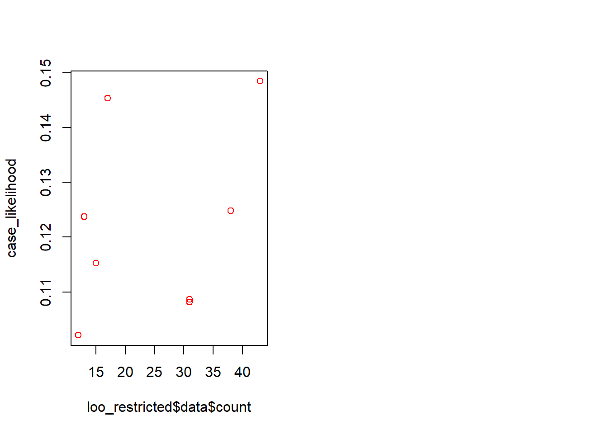
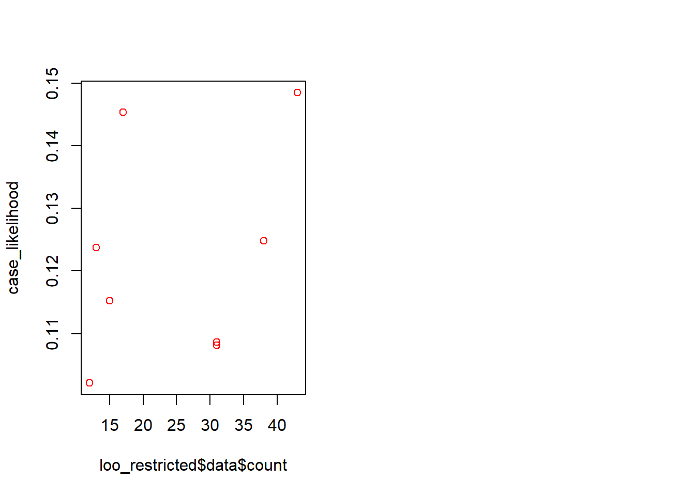
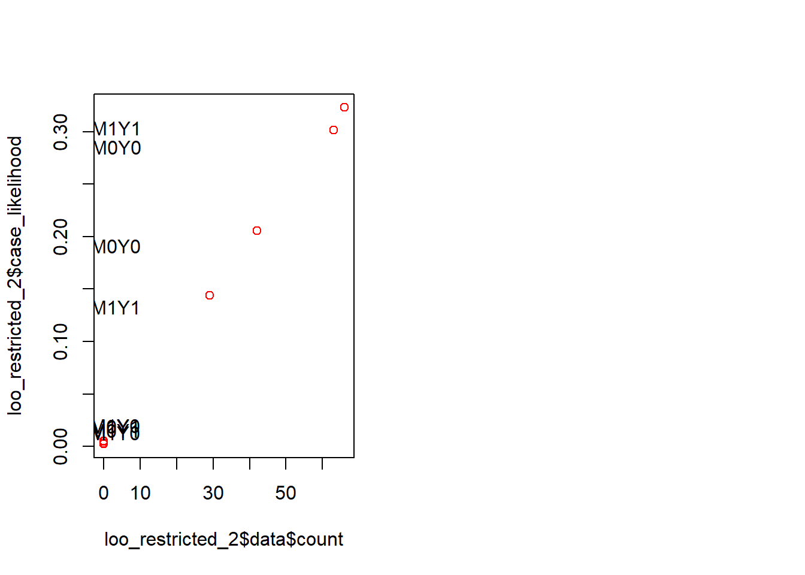
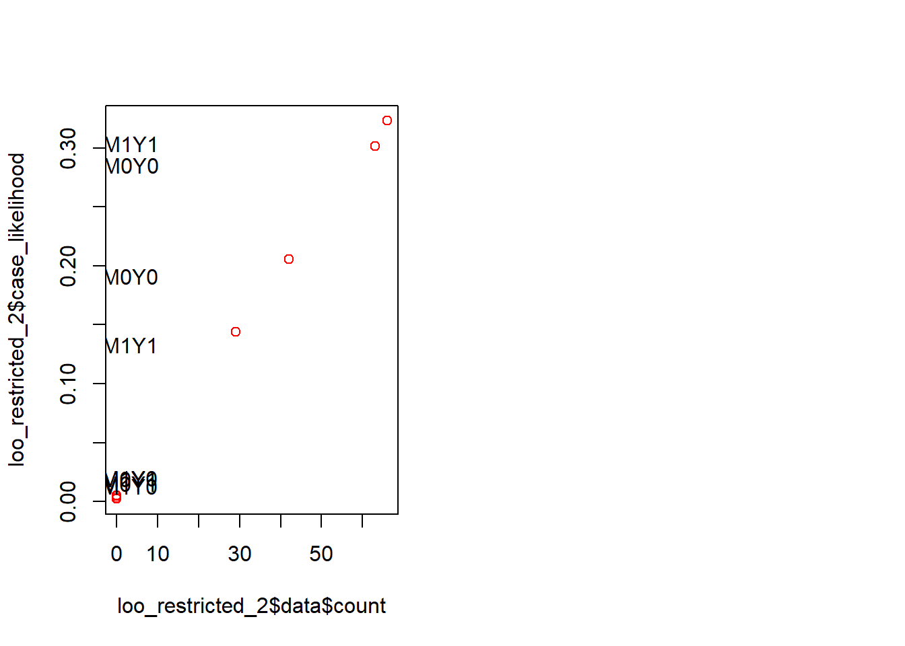

Chapter 15 Evaluating models
Model based inference takes the model seriously. But deep down we know that all of these models are wrong, in myriad ways. We examine strategies for figuring out whether a model is likely doing more harm than good.
Throughout this book we have maintained the conceit that you believe your model. But it is also obvious that even the most non-parametric-seeming models depend on substantive assumptions and that these are almost certainly wrong. The question then is not how much you believe your model (or whether you really believe what you say you believe) but whether your model is useful is some sense. How can we evaluate the usefulness of our models?
15.1 Five Strategies
Sometimes a model is just not able to fit the observed data well.
Imagine a situation in which researchers believe that the effect of \(X\) on \(Y\) runs entirely through \(M\), positing a model of the form \(X \rightarrow M \rightarrow Y\). Imagine that, however, that the true model is \(X \rightarrow M \rightarrow Y \leftarrow X\), with \(X\) only having a direct effect on \(Y\). The problem with the posited model, then, is that it is too restrictive: it does not allow for a direct effect that is in fact operating.
We are perfectly able to update using this overly restrictive model and the data — but the updated model can produce wildly inaccurate causal inferences. In Figure ??, we show the results of an analysis in which the data are generated from a true model of the form \(X \rightarrow M \rightarrow Y \leftarrow X\), with an average effect of \(X\) on \(Y\) of \(1/3\) but no effect of \(X\) on \(M\) or \(M\) on \(Y\), and thus no indirect effect.
In the figure, we show the inferences on the average treatment effect for two different updated models, both starting with flat priors: the more restricted, \(X \rightarrow M \rightarrow Y\) model and the less restricted, \(X \rightarrow M \rightarrow Y \leftarrow X\) model. We represent the true average effect with the vertical line in each graph.
As we can see, the more restrictive model that excludes direct effects generates a posterior credibility interval that excludes the right answer. So, if we go into the analysis with the restricted model, we have a problem.
But will we notice?
In the remainder of this section, we explore a range of diagnostics that researchers can undertake to evaluate the usefulness of their models or to compare models with one another: checking assumptions of conditional independence built into a model; attending to computational clues; checking the model’s fit; using “leave-one-out” cross-validation; and assessing model sensitivity.
Figure 15.1: A restricted model yields a credibility interval that does not contain the actual average effect.
15.1.1 Check conditional independence
First, even before engaging in updating, we can look to see whether the data pattern is consistent with our causal model. In particular, we can check whether there are inconsistencies with the Markov condition that we introduced in Chapter 2: that every node is conditionally independent of its non-descendants, given its parents. In this case, if the restricted model is right, then given \(M\), \(Y\) should be independent of \(X\).
Is it?
One way to check is to assess the covariance of \(X\) and \(Y\) given \(M\) in the data. Specifically, we regress \(Y\) on \(X\) for each value of \(M\), once for \(M=1\) and again for \(M=0\); a correlation between \(X\) and \(Y\) at either value of \(M\) would be problematic for the conditional independence assumption embedded in the restricted model.
Note that this form of diagnostic test is a classical one in the frequentist sense: we start by hypothesizing that our model is correct and then ask whether the data were unlikely given the model.
| M | estimate | std.error | p.value |
|---|---|---|---|
| 0 | 0.177 | 0.101 | 0.082 |
| 1 | 0.451 | 0.088 | 0.000 |
We report the regression coefficients on \(X\) in the table below. It is immediately apparent that we have a problem. At both values of \(M\), there is a strong correlation between \(X\) and \(Y\), evidence of a violation of the Markov condition implied by the restricted model.1
15.1.2 Computational clues
Second we may be lucky and run into computation issues. In this example there is a good chance that when you run the restricted model stan will throw an error:
Bulk Effective Samples Size (ESS) is too low, indicating posterior means and medians may be unreliable.
15.1.3 Bayesian \(p\) value: Is the data unusual given your model?
A third approach asks whether features of the data you observe are in some sense unusual given your model. For instance if a model assumed no adverse effects of \(X\) on \(Y\) and no confounding, then a strong negative correlation between \(X\) and \(Y\) would be unusual even for the model updated with this data.
In fact this approach is quite classical: we are looking to see whether we should “reject” our model in light of inconistent data.
An approach for doing this using simulated data from the posterior predictive distribution is described in Gabry et al. (2019).2
We consider two test statistics. First we look just at the distribution of the outcome \(Y\) to see how the actual distribution compares to the predicted distribution, second we look at the correlation between \(X\) and \(Y\) and see how this compares to the predicted distribution.
We see here the the distribution of the outcome \(Y\) is similar for both models, and the actual mean outcome is within the distribution of predicted mean outcomes. However the predicted correlation between \(X\) and \(Y\) is very different. The restricted model does not in fact predict any correlation and the strong correlation in the data is unusual. The unrestricted model does predict a strong correlation and the observed correlation is comfortably in the normal range. A frequentist looking at the observed correlation between \(X\) and \(Y\) should feel comfortable rejecting the restricted model.

15.1.4 Leave-one-out cross-validation
A further class of model-validation methods involves cross-validation. Rather than asking how well the updated model predicts the data used to update it, cross-validation uses the data at hand to estimate how well the model is likely to predict actual data that have not yet been seen.
One approach to cross-validation is the “leave-one-out” (LOO) algorithm. In a LOO approach, we update the model using all data points except for one and then ask how well the model performs in predicting the left-out observation. We repeat this for every data point in the dataset to assess how well we can predict the entire data set.
Often this approach is used to predict a particular outcome variable. In a framework, however, we are interested in predictions over the joint realization of all nodes, not just a single “outcome.” Thus, we calculate the posterior probability of each data point, using the model updated with all of the other observations.
 

The LOO estimate of out-of-sample predictive fit, for a dataset with \(n\) observations, is then:
\[\prod_1^np(y_i|y_{-i}, \text{model})\] where \(y_{-i}\) is the data pattern with observation \(y_i\) left out, and \(y_i\) represents the values of all nodes of interest for observation \(i\).
First, we implement LOO cross-validation of the two models using 200 data points generated from the unrestricted model. The likelihood of the data under the restricted model is 1.64e-182 the likelihood if 4.33e-175 under the unrestricted models. Thus, the unrestricted model represents an estimated improvement in out-of-sample prediction on the order of 2.64e+07.
We can visualize the pattern in Figure XXXX, where we plot the likelihood of each possible data type under the restricted model against the likelihood of that data type under the unrestricted model. Looking at the scales of the two axes—which is much more compressed on the horizontal than on the vertical—one can see that the restricted model is not able to differentiate as much across the data types as the unrestricted.
Notably, the restricted model is not able to “learn” from the data about the (in fact, operative) relationship between \(X\) and \(Y\). We can see that, for any given \(X, M\) combination, the two possible values of \(Y\) are predicted with essentially the same likelihood. The restricted model also seems to have “learned” that different values \(X,M\) combinations are differentially likely, even though they are not under the true model. The unrestricted model, on the other hand, essentially divides the data types into two groups: those with a positive \(X,Y\) correlation and those with a negative \(X,Y\) correlation and has correctly (given the true model) learned that the former is more likely than the latter.
In Figure XXXX, we then see how the likelihoods of each data type line up with the actual count of each data type. As we can see, the unrestricted model updates to likelihoods that fit the actual data pattern well while the restricted model does not.
 

Y X->M->Y –>
Second, we implement LOO cross-validation of the two models using 200 data points generated from the restricted model. The likelihood of the data under the restricted model is now 3.57e-119, compared to the likelihood of 1.04e-124 under the unrestricted models. Thus, the unrestricted model represents an estimated improvement in out-of-sample prediction on the order of 2.91e-06.
15.1.5 Sensitivity
The last approach we consider asks: how much do your conclusions depend on your assumptions? You can worry less about model assumptions if the conclusions are not strongly dependent on them.
To illustrate using a process tracing example, consider a case in which you are unsure about posited parameter values. Say for instance we have an \(X \rightarrow M \rightarrow Y\) model. Say we think it is unlikely that \(M\) has an adverse effect on \(Y\), but we are not sure how unlikely this is. We assume all other types are equally likely. How much does our updating on \(X\) causing \(Y\) when we see \(M=1\) or \(M=1\) depend on this second stage assumption?
We answer the question by looking at the inferences we would make for a range of possible values. We give an example in Table REF. We see here that our inference in the case that \(M=1\) does not depend on these beliefs about adverse effects. The reason is that in this case we only need to distinguish between cases with positive effects at both stages and other cases that yield \(M=1\). Our inferences hen \(M=0\) do depend on this however since in this case we are trying to assess specifically the share of cases with a positive effect of \(X\) on \(Y\) that operate via negative effects at each stage.
| \(\lambda^Y_{10}\) | Prior | \(M=0\) | \(M=1\) |
|---|---|---|---|
| 0.00 | 0.167 | 0.000 | 0.25 |
| 0.05 | 0.183 | 0.068 | 0.25 |
| 0.10 | 0.200 | 0.125 | 0.25 |
| 0.15 | 0.217 | 0.173 | 0.25 |
| 0.20 | 0.233 | 0.214 | 0.25 |
| 0.25 | 0.250 | 0.250 | 0.25 |
The amount we update when \(M=1\) does depend on \(\lambda^Y_{10}\) because \(\lambda^Y_{10}\) affects our belief, prior to seeing \(M\), that \(X=1\) caused \(Y=1\). However the conclusion we reach given \(M\) is observed, does not depend on \(\lambda^Y_{10}\).
In the same way we can ask how our conclusions change if we relax assumptions on restrictions, on confounds, or on causal structure.
We note that in cases in which you cannot quantify uncertainty about parameters you might still be able to engage in a form of “qualitative inference.” There is a literature on probabilistic causal models that assesses the scope for inferences when researchers provide ranges of plausible values for parameters (perhaps intervals, perhaps only signs, positive negative, zero), rather than specifying a probability distribution. For a comprehensive treatment of qualitative algebras, see Parsons (2001). Under this kind of approach, a researcher might willing to say that they think some probability \(p\) is not plausibly greater than .5, but unwilling to make a statement about their beliefs about where in the \(0\) to \(0.5\) range it lies. Such incomplete statements can be enough to rule our classes of conclusion.
15.2 Evaluating the Democracy-Inequality model
** GENERATE A TABLE SHOWING HOW PIMD DOES ON 5 CRITEREA **
15.2.1 Prior check
In a second iteration of the analysis, we show what happens if we loosen the monotonicity restriction on \(I\)’s effect on \(M\). Here we consider negative effects of \(I\) on \(M\) unlikely, rather than impossible, and we consider null and positive effects somewhat likely. We refer to these priors as “quantitative priors” in the sense that they place a numerical value on beliefs rather than a logical restriction. Here, we set our prior on \(\theta^M\) as: \(p(\theta^M=\theta^M_{10})=0.1\), \(p(\theta^M=\theta^M_{00})=0.25\), \(p(\theta^M=\theta^M_{11})=0.25\), and \(p(\theta^M=\theta^M_{01})=0.4\). We show the results for the inferences given different findings in tables and . The mapping into expected posterior variance associated with each strategy is shown by the numbers in parentheses in Table .
The results differ in various modest ways. However, the biggest difference we observe is in the degree to which the mobilization clue matters when we are looking for negative effects of inequality. As discussed, if we assumed monotonic positive effects of inequality on mobilization and monotonic positive effects of mobilization on inequality, then the mediator clue is uninformative about the indirect pathway since that pathway can only generate a positive effect. However, if we allow for the possibility of a negative effect of inequality on mobilization, we now make \(M\) informative as a mediator even when the effect of inequality that we are interested in is negative: it is now possible that inequality has a negative effect on democratization via a negative effect on mobilization, followed by a positive effect of mobilization on democratization. So now, observing whether mobilization occurred adds information about whether a negative effect could have occurred via the mobilization pathway.
Moreover, it is possible for the two effects of observing \(M\) on our beliefs to work in opposite ways. What we learn from observing \(M\) about the \(I \rightarrow M \rightarrow D\) pathway may push in a different direction from what we learn from observing \(M\) about the direct \(I \rightarrow D\) pathway. We see this dynamic at work in a case with low inequality and democratization. Where we are only learning about \(M\) as a moderator of \(I\)’s direct effect (monotonicity assumption in place), observing \(M=0\) shifts our beliefs in favor of \(I\)’s negative effect. But where we are learning about \(M\) as both mediator and moderator, observing \(M=0\) shifts our beliefs against \(I\)’s negative effect. The reason for this latter result is straightforward: if \(I=0\) and we then see \(M=0\), then we have just learned that inequality’s possible indirect negative effect, running via the mobilization pathway, has not in fact occurred; and this has a considerable downward effect on our beliefs in an overall negative effect of inequality. This learning outweighs the small positive impact of observing \(M=0\) on our confidence that \(I\) had a direct negative effect on \(D\).
We see these differences most clearly in the cases of Albania (as compared to Mexico) and Nicaragua (as compared to Taiwan). Under priors fully constrained to monotonic causal effects, we saw that the mediator clue, \(M\), made only a small difference to our inferences. However, if we allow for a negative effect of \(I\) on \(M\), even while believing it to be unlikely, observing mobilization in Albania and Nicaragua makes us substantially more confident that inequality mattered, and differentiates our conclusions about these cases more sharply from our conclusions about Mexico and Taiwan, respectively.
References
Gabry, Jonah, Daniel Simpson, Aki Vehtari, Michael Betancourt, and Andrew Gelman. 2019. “Visualization in Bayesian Workflow.” Journal of the Royal Statistical Society: Series A (Statistics in Society) 182 (2): 389–402.
Parsons, Simon. 2001. Qualitative Methods for Reasoning Under Uncertainty. Vol. 13. Mit Press.
In applying the Markov condition, we also need to take into account any unobserved confounding. For instance, suppose that there was an unobserved confounder of the relationship between \(M\) and \(Y\) in the \(X \rightarrow M \rightarrow Y\) model. Then we would not expect \(Y\) to be independent of \(X\) conditional on \(M\). Intuitively, the data pattern we described could be consistent with such a model in which on average \(X\) does not cause \(M\) but still in those cases in which \(X=M\) we have \(Y=X\). Another way to think about this is that \(M\) now acts as a collider between \(X\) and another unobserved cause of \(Y\); so conditioning on \(M\) introduces a correlation between \(X\) and this unobserved cause, and thus between \(X\) and \(Y\).↩
Tools in the
bayesplotpackage can be used to show how typical the data we observe is for different models↩